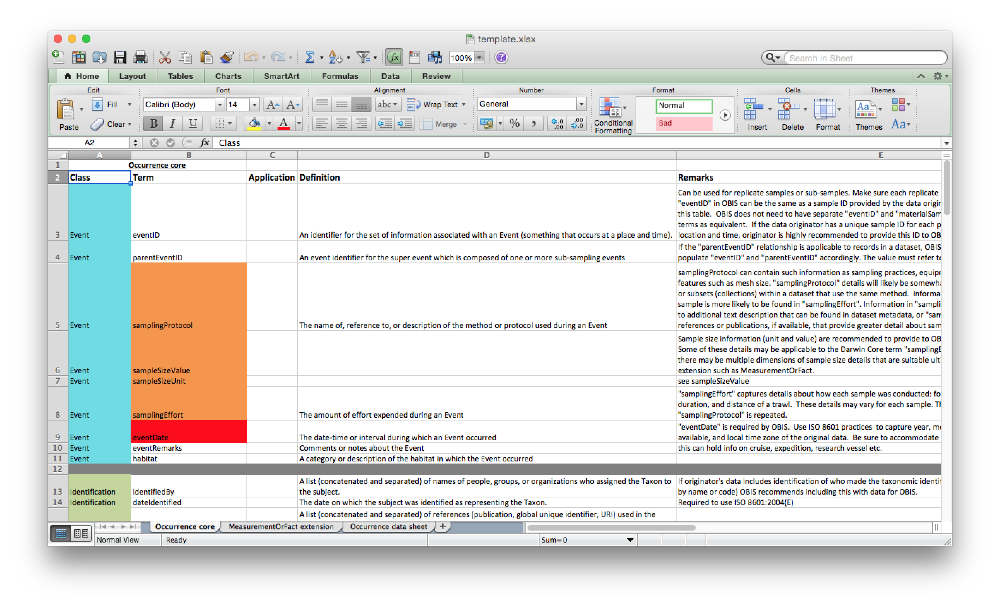
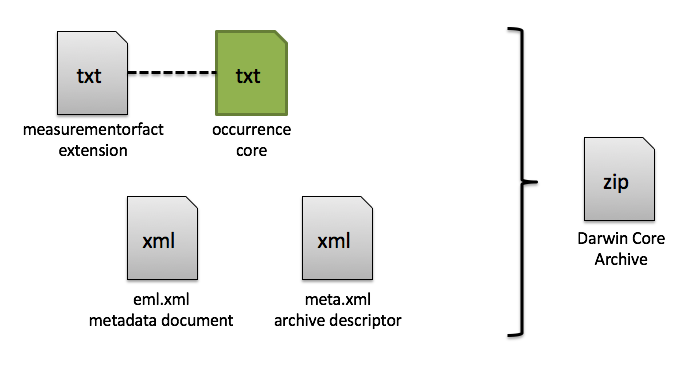
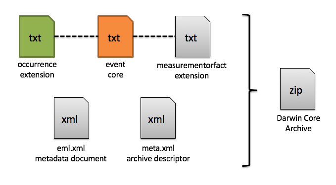

class: center, middle # Biodiversity data standards:<br/>Darwin Core --- ## Read more: https://github.com/iobis/training/wiki --- # Darwin Core - [Darwin Core](http://rs.tdwg.org/dwc/) is a body of standards for biodiversity informatics. - It provides stable [terms](http://rs.tdwg.org/dwc/terms/) and vocubularies for sharing biodiversity data. - Darwin Core is maintained by [TDWG](http://tdwg.org/) (Biodiversity Information Standards, formerly The International Working Group on Taxonomic Databases). - A template with all terms relevant for OBIS can be found at https://github.com/iobis/template. --- # Darwin Core <p class="center"></p> --- # Record level terms #### basisOfRecord This term is required. Possible values are `PreservedSpecimen`, `FossilSpecimen`, `LivingSpecimen`, `HumanObservation`, and `MachineObservation`. #### institutionCode `ìnstitutionCode` should contain an identifier for the institution that owns the data. #### collectionCode `collectionCode` identifies the collection or dataset within an institution. #### catalogNumber `catalogNumber` identifies a record within a dataset. --- # Record level terms #### occurrenceID `occurrenceID` should be globally unique. It can be constructed from the `institutionCode`, the `collectionCode` and the `catalogNumber`. --- # Taxonomy and identification #### scientificName `scientificName` should always contain the originally recorded scientific name, even if it is invalid. This is necessary to be able to track back records to the original dataset. The name should be at the lowest possible taxonomic rank. #### scientificNameID A [WoRMS](http://www.marinespecies.org/) LSID should be added in `scientificNameID`, OBIS will use this identifier to link the record to the accepted taxonomic name. #### scientificNameAuthorship We recommend to not include authorship in `scientificName`, and only use `scientificNameAuthorship` for that purpose. --- # Taxonomy and identification #### identificationQualifier Identification qualifiers, such as cf. or aff. should go in `identificationQualifier`. #### kingdom `kingdom` can aid us in identifying the taxon that `scientificName` refers to, although is is not necessay when an `scientificNameID` is provided. #### taxonRank --- # Occurrence #### occurrenceStatus `occurrenceStatus` is an important term, because it allows us to distinguish between presence and absence records. We recommend to always fill in this field and to use `present` or `absent`. #### organismQuantity A few terms related to quantity, organismQuantity and organismQuantityType, have been recently added to Darwin Core. This is a lot more versatile than the older individualCount field. organismQuantity should contain the the quantity value. #### organismQuantityType `organismQuantityType` contains the parameter and units. There is a [recommended vocabulary](http://rs.gbif.org/vocabulary/gbif/quantity_type_2015-07-10.xml) for organismQuantityType which includes values such as individuals, biomassAFDG (biomass ash free dry weight in gram), percentageOfBiomass and percentageCoverage. The quantity terms should be used together with the new sample size related fields. --- # Occurrence #### individualCount #### sex The recommended vocabulary for sex can be found [here](http://rs.gbif.org/vocabulary/gbif/sex.xml). #### lifeStage --- # Location #### decimalLatitude, decimalLongitude Occurrence coordinates should be provided in decimal degrees on the [WGS 84](https://en.wikipedia.org/wiki/World_Geodetic_System) (EPSG:4326) geodetic datum. #### coordinateUncertaintyInMeters A `coordinateUncertaintyInMeters` should be provided along with the coordinates. This is the smallest circle around the given `decimalLatitude` and `decimalLongitude` containing the whole location. #### geodeticDatum Recommended best practice is use the [EPSG code](https://www.epsg-registry.org/). --- # Location #### footprintWKT A [Well-Known Text](https://en.wikipedia.org/wiki/Well-known_text) (WKT) representation of the shape of the location can be provided in footprintWKT. This is particularly useful for tracks, transects, tows, trawls, or when an exact location is not known. Examples: ```text LINESTRING (30 10, 10 30, 40 40) POLYGON ((30 10, 40 40, 20 40, 10 20, 30 10)) MULTILINESTRING ((10 10, 20 20, 10 40),(40 40, 30 30, 40 20, 30 10)) MULTIPOLYGON (((30 20, 45 40, 10 40, 30 20)),((15 5, 40 10, 10 20, 5 10, 15 5))) ``` #### minimumDepthInMeters, maximumDepthInMeters This should be the depth at which the sample was taken, not the water column depth at that location! --- # Location #### locality #### locationAccordingTo This contains the source of a locality name. This can for example be a gazetteer such as [Marine Regions](http://www.marineregions.org/). --- # Time <p class="center"><img src="https://camo.githubusercontent.com/b4f27a2ff22f7b9589a973a63c6d126182aeb519/68747470733a2f2f696d67732e786b63642e636f6d2f636f6d6963732f69736f5f383630312e706e67"/></p> --- # Time #### eventDate The date and time at which an occurrence was recorded goes in `eventDate`. This terms uses the [ISO 8601 standard](https://en.wikipedia.org/wiki/ISO_8601). Some examples: ```text 1973-02-28T15:25:00 2005-08-31T12:11+12 1993-01-26T04:39+12/1993-01-26T05:48+12 2008-04-25T09:53 1948-09-13 1993-01/02 ``` --- # Sampling #### eventID #### parentEventID #### samplingProtocol #### sampleSizeValue #### sampleSizeUnit #### samplingEffort --- # Darwin Core Archive <p class="center"></p> --- # Darwin Core Archive <p class="center"></p> --- # Darwin Core Archive ### Archive descriptor (meta.xml) ```xml <archive xmlns="http://rs.tdwg.org/dwc/text/" metadata="eml.xml"> <core encoding="UTF-8" fieldsTerminatedBy="\t" linesTerminatedBy="\n" fieldsEnclosedBy="" ignoreHeaderLines="1" rowType="http://rs.tdwg.org/dwc/terms/Event"> <files> <location>event.txt</location> </files> <id index="0" /> <field index="1" term="http://rs.tdwg.org/dwc/terms/eventID"/> <field index="2" term="http://rs.tdwg.org/dwc/terms/parentEventID"/> <field index="3" term="http://rs.tdwg.org/dwc/terms/decimalLatitude"/> <field index="4" term="http://rs.tdwg.org/dwc/terms/decimalLongitude"/> </core> ``` --- # Darwin Core Archive ### Archive descriptor (meta.xml) ```xml <extension encoding="UTF-8" fieldsTerminatedBy="\t" linesTerminatedBy="\n" fieldsEnclosedBy="" ignoreHeaderLines="1" rowType="http://rs.tdwg.org/dwc/terms/Occurrence"> <files> <location>occurrence.txt</location> </files> <coreid index="0" /> <field index="1" term="http://rs.tdwg.org/dwc/terms/basisOfRecord"/> <field index="2" term="http://rs.tdwg.org/dwc/terms/occurrenceID"/> <field index="3" term="http://rs.tdwg.org/dwc/terms/scientificName"/> </extension> ``` --- # Darwin Core Archive ### Archive descriptor (meta.xml) ```xml <extension encoding="UTF-8" fieldsTerminatedBy="\t" linesTerminatedBy="\n" fieldsEnclosedBy="" ignoreHeaderLines="1" rowType="http://rs.tdwg.org/dwc/terms/MeasurementOrFact"> <files> <location>measurementorfact.txt</location> </files> <coreid index="0" /> <field index="1" term="http://rs.tdwg.org/dwc/terms/measurementType"/> <field index="2" term="http://rs.tdwg.org/dwc/terms/measurementValue"/> <field index="3" term="http://rs.tdwg.org/dwc/terms/measurementUnit"/> <field index="4" term="http://rs.tdwg.org/dwc/terms/measurementMethod"/> </extension> </archive> ``` --- # Darwin Core Archive ### Metadata (eml.xml)